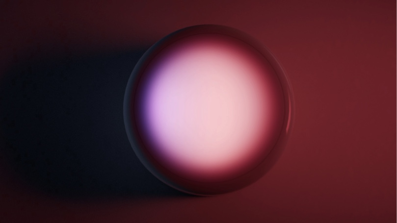

Phos (i.e. ‘light’ in Greek) is a smart lighting controller that takes user interaction to the whole new physical level. In the era when lights at home are turned on and off wirelessly, what’s the response from the world of switches?
From complexity to order
The life of a smart home user isn’t easy. It requires a decent amount of time and effort, in order to set up and configure smart lightbulbs at home.
After that, it requires several more steps to just switch them on. Phos aims to bring order to this process.
The evolution
It took a few iterations to realise that in the year 2019 the electronic product can be made as simple as a plain white puck with no mechanical elements, even connectors.
Wireless charging makes it portable, touch sensor and accelerometer make it work without mechanics and bright LEDs make the front side glow. The result is an object that encompasses both purity and function.
Tech-backed user journey
The first problem gets solved as Phos automatically discovers smart lights in the room and connects to them. This eliminates the need to set up an app, in order to just get the lights to work.
Because smart lights operate over various wireless protocols, it usually takes some time to actually update the color. Phos features an illuminated front panel that will show the state of lights in the room before the update signal gets sent. And as lightbulbs can render millions of colors, Phos will follow.
The ultimate portability
Since smart lights are always on and are operated via wireless signals, the light switch doesn’t need to be on the wall anymore. It can be anywhere!
With this in mind, Phos was designed to live on the wall, or on table, or anywhere else in the room. It features a touch-sensitive front surface, which acts as a dial, in order to control the light intensity, color or to switch presets. The same can also be done by physically rotating Phos when it is on the wall.
Of course, Phos can be taken out of its dock station, in case it needs to travel from the wall to the user’s desk.
